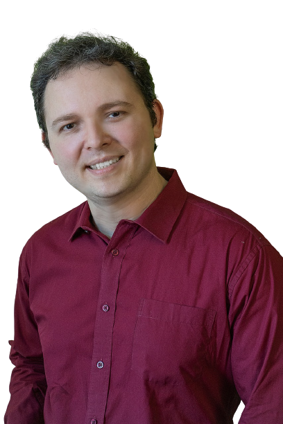

COMO INICIOU SUA CARREIRA
Desde sempre gostou da biologia e da fisica. Na escola sempre era líder de turma, monitor (de química, física e matemática), muito ligado aos estudos, o que fez dar aulas como professor particular ganhando dinheiro com 16 anos. Gostava de engenharia mecatrônica e fez um curso ao qual não concluiu, assim como o curso de Psicologia. Fez faculdade de biologia e com 20 anos já estava trabalhando como professor em escolas. Hoje com 43 anos tem 23 anos de docência. Estudar lhe traz felicidade e ensinar é uma forma de se conectar com as pessoas.
CARGO QUE OCUPA
Professor do IFCE de ensino médio técnico(biologia), dá aulas de especialização em Tecnologias Habitacionais, e aulas do mestrado, desde setembro de 2010.
É diretor do Centro de Referência em Educação a Distância
